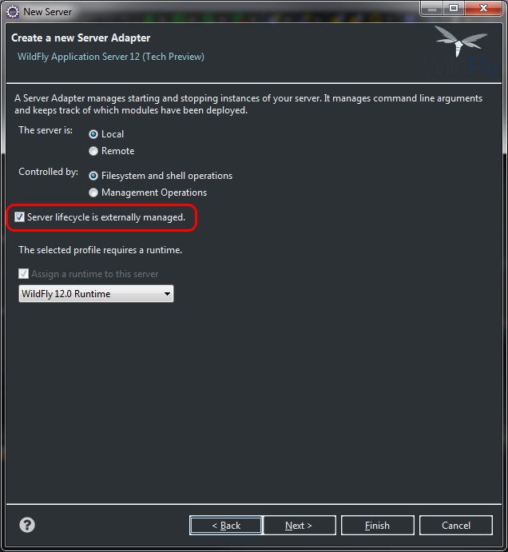
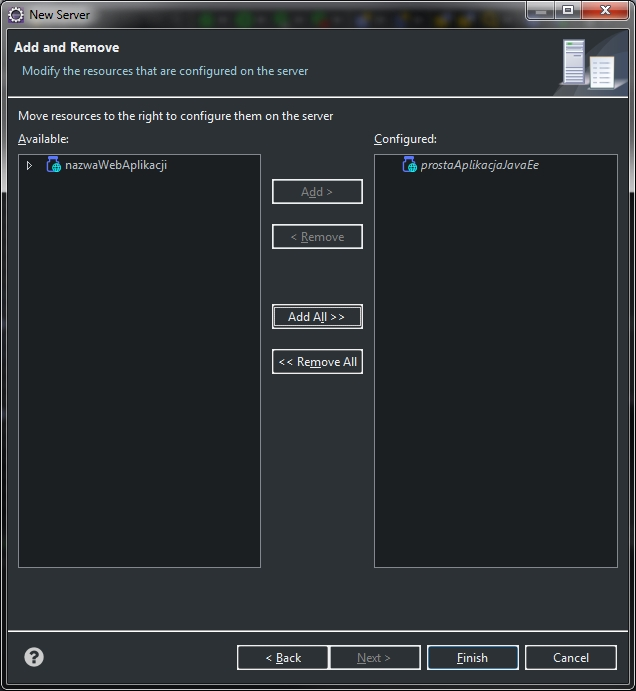

Aby można było debugować aplikację uruchomioną na serwerze JBoss działającą na tym samym komputerze, należy najpiejw uruchomić serwer JBoss z parametrem standalone.bat --debug i dodać do Eclipse serwer z następującymi ustawieniami:
Otwieramy w eclipse zakładkę Servers klikając kolejno: Window -> Show view -> Servers. Klikamy w nowo otwartym oknie
ppm -> New -> Server i wybieramy serwer typu WildFly12 spod JBoss Community, jak pokazano na obrazku poniżej:
Klikamy Next i w następnym oknie należy zaznaczyć opcje jak pokazano to na obrazku poniżej:
W kolejnym oknie pokazanym na obrazku poniżej dodajemy aplikacje, które chcemy na tym serwerze uruchamiać i klikamy Finish
Następnie aby uruchomić debugger na utworzonym wczesniej serwerze nalezy kliknąć na projekcie, który chcemy debugować: ppm -> Debug As -> Debug on Server. Wybieramy
wcześniej dodany serwer WildFly 12 i klikamy Next. W kolejnym oknie możemy jeszcze dodać lub usunąć aplikacje do debugowania i zatwierdzamy przyciskiem Finish. Eclipse powinien podłączyć
się w tej chwili do uruchomionego już wcześniej serwera WildFly 12
W przypadku, kiedy serwer się uruchamia niepoprawnie, tzn. nie wczytuje Springowego Dispatcher Servletu, to należy zatrzymać serwer. Usunąć pliki war aplikacji, które znajdują się w katalogu uruchomieniowym serwera KatalogInstalacjiSerwera\standalone\deployments. Zbudować ponownie aplikację przy użyciu narzędzia maven i uruchomić serwer ponownie.
Aby debugować aplikację z Eclipse uruchomioną na serwerze Tomcat poza środowiskiem Eclipse, należy uruchomić serwer Tomcat w trybie debugera. Robimy to uruchamiając skrypt catalina.bat jpda start z katalogu bin serwera Tomcat. Następnie w Eclipse w ustawieniach Debugera (Debug Configurations) należy dodać nową konfigurację debugera. Należy kliknąć ppm na Remote Java Application -> New. Dodając konfigurację debugowania będąc w Eclipse w projekcie, który chcemy debugować, konfiguracja zostanie dodana z domyślnymi ustawieniami. Takie w zupełności wystarczają na podłączenie się do serwera Tomcat. Klikamy Debug i Eclipse powinien podłączyć się do serwera.